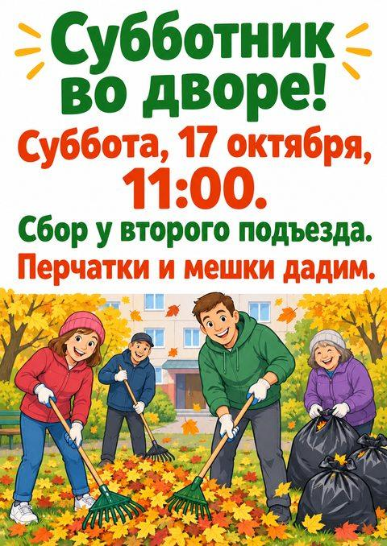

Подойдёт почта, к которой у тебя постоянный доступ. Gmail с адресом @gmail.com — один из вариантов; универсального требования именно к окончанию «.com» у этих инструментов нет.
Если почта уже есть, сначала попробуй её или вход через свой Google/Apple-аккаунт.
Для нового Google-аккаунта открой форму регистрации Google. Выбери личный аккаунт, заполни имя и данные, предложенные формой, выбери адрес и пароль.
На телефоне можно открыть Gmail → значок профиля → добавить аккаунт → Google → создать аккаунт. Если регистрация в браузере не получается, это альтернативный путь, а не гарантия отсутствия проверок.
Пройди проверки, которые запросит Google. Добавь способ восстановления и сохрани данные входа у себя. Google также позволяет использовать существующую почту другого сервиса.
Проверь написание адреса, папку спама и последнее письмо с кодом.
Используй тот же способ входа, что при регистрации. Вход через Google и вход по другой почте могут вести в разные аккаунты.
Попробуй другой браузер или устройство. Не повторяй запросы кода непрерывно: дождись срока на экране.
Если сервис сообщает о неподдерживаемой стране или типе аккаунта, смена почты доступ не вернёт. Проверь официальные условия по ссылке выше.
ChatGPT умеет то, что другим нейросетям даётся плохо: рисовать картинку с ровным русским текстом. Объявление в подъезд, табличка на дверь, поздравление — за пару минут, без редакторов. А учимся главному для объявлений: проверять дату вместе с днём недели. Ошибка в них соберёт людей не в тот день.

Объявление, которое ChatGPT нарисовал по запросу из урока. Все слова — без ошибок.
Шаг 1. Попроси объявление
Главное в запросе — точный текст в кавычках и «больше никакого текста»: так на картинке будет только то, что ты написал. «Читалось с двух метров» — чтобы буквы вышли крупными.
Запрос
Нарисуй объявление для [где: подъезда, двери, доски], вертикальный лист А4. Текст — слово в слово, крупно, чтобы читалось с двух метров: «[твой текст объявления]». Ниже — весёлая картинка: [что нарисовать]. Больше никакого текста.
Открой chatgpt.com, вставь запрос и отправь. Картинка у нас пришла примерно за минуту
Скачать — значок со стрелкой на картинке
Шаг 2. Прочитай как прохожий
Прочитай объявление вслух: каждое слово, каждую цифру. У нас с первого раза всё было верно — даже «подъезда» с твёрдым знаком. В уроках про GigaChat и Шедеврум мы советуем «без надписей»: там буквы часто выходят кривыми. Здесь — ровные. Но ошибка нашлась в другом месте.
Что нашлось у нас
Субботник перенесли. Мы написали: «Субботник перенесли на 25 октября. Поменяй дату, остальное оставь как есть». ChatGPT аккуратно поменял число — и оставил «Суббота». А 25 октября 2026 года — воскресенье.
Число поменялось, день недели — нет.
ChatGPT ничего не сказал — просто выполнил просьбу слово в слово. Мы ведь просили поменять дату, а остальное оставить. С таким объявлением часть соседей пришла бы в субботу, часть — в воскресенье.
Шаг 3. Попроси проверку перед печатью
Запрос
Проверь объявление перед печатью: перепиши текстом все слова и цифры с картинки и скажи, совпадает ли день недели с датой в [год] году.
Так ChatGPT сам нашёл ошибку: «25 октября 2026 года — воскресенье, а не суббота». После просьбы «Исправь на картинке: «Воскресенье, 25 октября, 11:00.» Остальное не меняй» — исправил. Остальной текст остался прежним, рисунок внизу немного перерисовался.
Перед печатью
СловаКаждое — как в твоём тексте
ЦифрыВремя, номер подъезда, телефон
ДатаСовпадает с днём недели
ЛишнееНет слов, которых ты не писал
Если что-то не так
На картинке лишние слова
Попроси убрать их и повтори в запросе: «Больше никакого текста»
Перепутана буква или цифра
Назови, где именно: «В слове „подъезда“ пропал твёрдый знак — исправь только его. Остальное не меняй»
Поменялась дата
Меняй дату вместе с днём недели. После любой правки проси: «Перепиши текст с картинки»
Итоги
Получаешь в ChatGPT картинку с ровным русским текстом
Даёшь текст в кавычках и запрещаешь лишний
Читаешь объявление вслух, как прохожий
Меняешь дату вместе с днём недели
Перед печатью просишь переписать текст с картинки
Теперь твоя очередь
Сделай объявление или табличку, которая тебе правда нужна: в подъезд, на дверь, к празднику. Перед печатью попроси переписать текст с картинки и сверь дату с днём недели.
Текст на картинке — слово в слово
Дата и день недели совпадают
Лишних слов нет
Картинка скачана
Урок рассчитан на сайт chatgpt.com; у нас был бесплатный план. Названия кнопок могут отличаться в приложении и после обновлений. Подписка на наше обучение не включает платные тарифы нейросетей.
ChatGPT — запросы урока проверены 3 октября 2026, бесплатный план. Дни недели сверены по календарю. Картинки — ответы ChatGPT без правок, только уменьшены.
Что дальше
Следующий урок — «Куда ушли деньги: выписка за 5 минут». Разложишь траты из выписки банка по категориям и проверишь итог одной строкой.